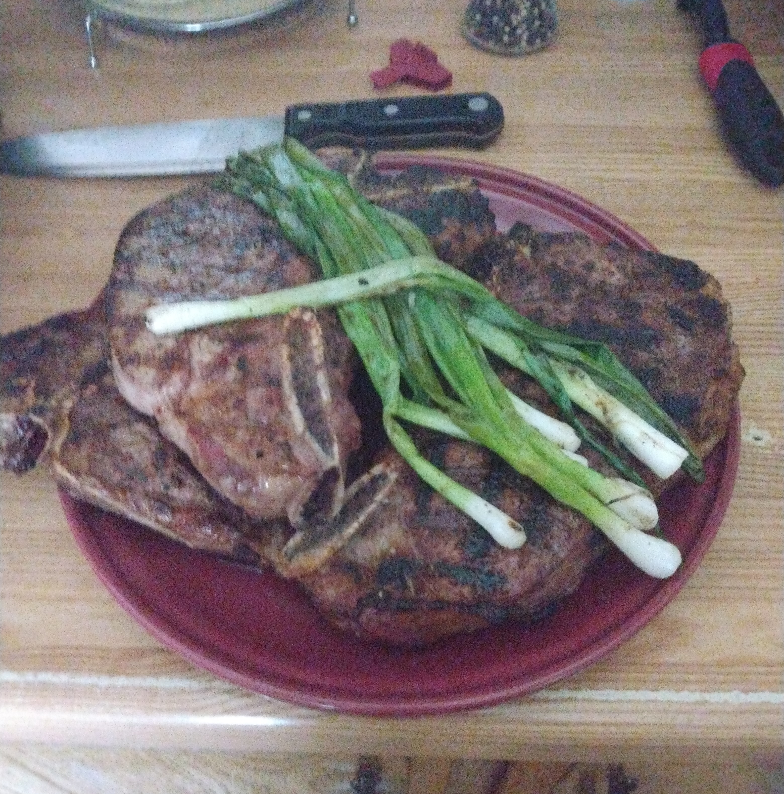

Steak!
Description
This is how the "Old Man" makes his steaks. If you have never had one, you don't visit often enough
ingredients
- The best cut of steak you can get you hands on
- Kosher salt, or any coarse/flaky salt will do
- Fresh ground black pepper
- Garlic Powder
- Carolina reaper powder (optional)
Instructions:
Preperation:
- Dry brine the steaks from one hour to three days beforehand by generously coating all over with kosher salt, cracked black pepper and garlic powder (and Carolina Reaper for Uncle Doc and myself) on a rack in the refrigerator
- After seasoning be sure to let the meat rest at room temperature for at least an hour before cooking
- Fire up the charcoal grill (lump charcoal, not briquets if possible) to a rip snorting high flame
- Sear each side directly over the flames for 2 minutes
- Rotate and sear an additional minute on each side to get crossed grill marks
- Move to indirect heat until you reach desired internal temperature
- Rest on a covered plate for at least 5 minutes to let the juices settle
- Flash grill up some green onions, garlic bread, whatever you want grilled to serve with steak
...and Bob's your uncle.